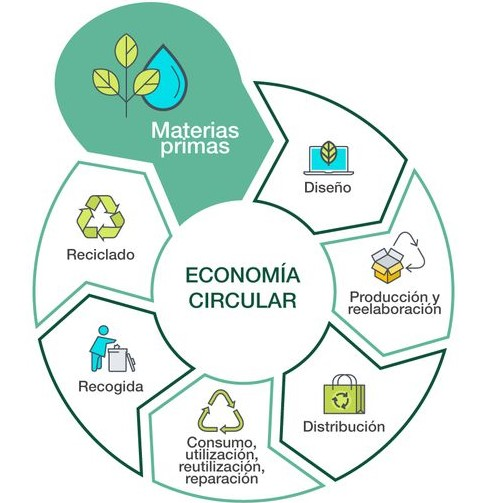

SOBRE MI
Hola! Soy Cristian, estudiante de Ingeniería Industrial, apasionado por la ciencia y análisis de datos, sumergiéndome en el universo de la programación. A lo largo de mi formación he desarrollado sólidas habilidades en ciencias exactas, así como también en el manejo de herramientas para el análisis de datos y programación, tales como Python, R, SQL y Power BI. He completado con éxito proyectos donde he podido aplicar los conocimientos adquiridos. Así como tambien los he podido aplicar en el ambito laboral.
SKILLS
Soft Skills
Hard Skills
ESTUDIOS
2023-Actualidad
Ingeniería Industrial
Universidad Tecnológica Nacional
Actualmente estoy cursando las últimas 5 materias de la carrera, con un enfoque en gestión de proyectos y analisis de datos.
2023-Actualidad
Desarrollador FrontEnd
Potrero Digital
Estoy en la recta final del curso, donde desarrollé habilidades en el manejo de HTML y CSS, así como frameworks y todo lo relacionado con Front.
2023-Actualidad
Gestion de Proyectos
Coursera
En éste curso estoy desarrollando, reafirmando y expandiendo mis conocimientos y habilidades sobre el manejo y gestion de proyectos. Me encuentro en la recta final del mismo.
2023
Data Analytics
Coursera
En ésta oportunidad desarrollé y reafirme habilidades sobre el análisis de datos, complementando con lo ya aprendido en Data Science.
2022-2023
Diplomatura en Python
Universidad Tecnológica Nacional
En éste curso logré profundizar conocimientos sobre Python con orientación en Machine Learning.
2021
Data Scientist
Digital House
En esta academia adquirí sólidos conocimientos acerca del análisis y manipulación de datos utilizando Python. Asi como tambien habilidades como, análisis y visualizacion, utilizacion de herramientas y bibliotecas de Python y SQL.
2015-2019
Ingeniería Electromecánica
Universidad Tecnológica Nacional
Cursé hasta 3° año, pero por la orientación a economía y la combinación de gestión de proyectos y análisis de datos, decidí cambiarme a Ing. Industrial.
2017
Operador de Office Avanzado
Instituto Superior Las Heras
En éste instituto adquirí conocimientos básicos y avanzados sobre el manejo de las herramientas de office (Excel, Word, PPT, Acces, etc.).
2009-2014
Técnico especializado en automatización
Escuela 4-124 Reynaldo Merin
Es una escuela Técnica que está orientada a la electricidad, electronica y automatización de maquinaria industrial.
PROYECTOS
Este proyecto tiene como objetivo seleccionar, implementar y ajustar un modelo que identifique datos y pueda predecir los necesarios.
Sostenibilidad - ODS
Este proyecto tiene como objetivo recolectar y clasificar muestras residuales para posteriormente analizarlas y poder dar un plan de mejoras.
EXPERIENCIA LABORAL
2017 - Actualidad
Establecimiento La Gioconda S.A.
Actualmente, me desempeño como Encargado de producción, con tareas como: manejo de personal, toma de desiciones, trabajo en equipo, logística y abastecimiento
2014 - 2017
Industrias Fruticolas
Inicialmente me desarrollé como operario general, realizando tareas varias y finalmente como operador de máquinas industriales
2010 - 2014
Kiosco
Durante esos años, ocupe el puesto de atención al público.